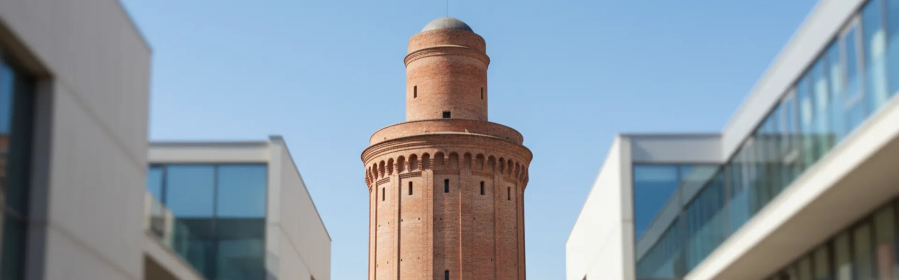
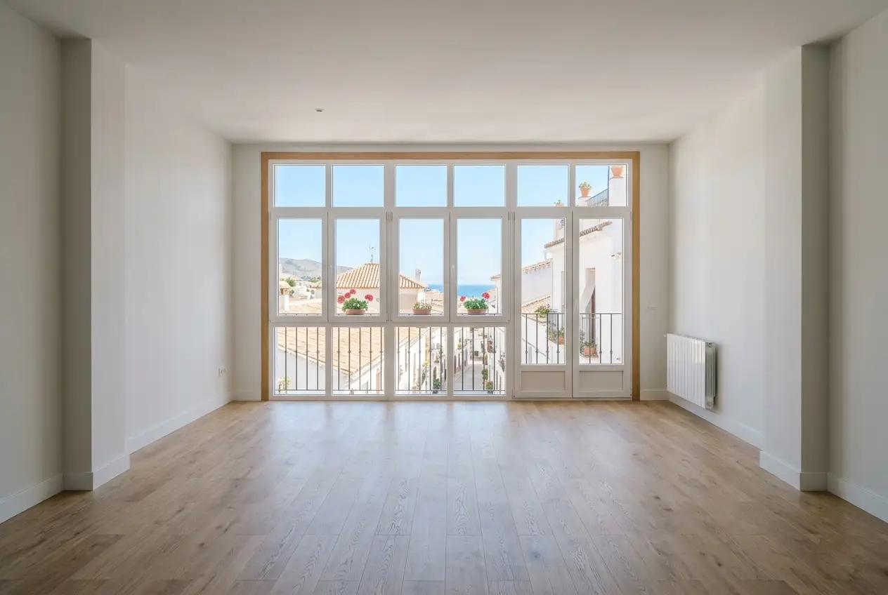
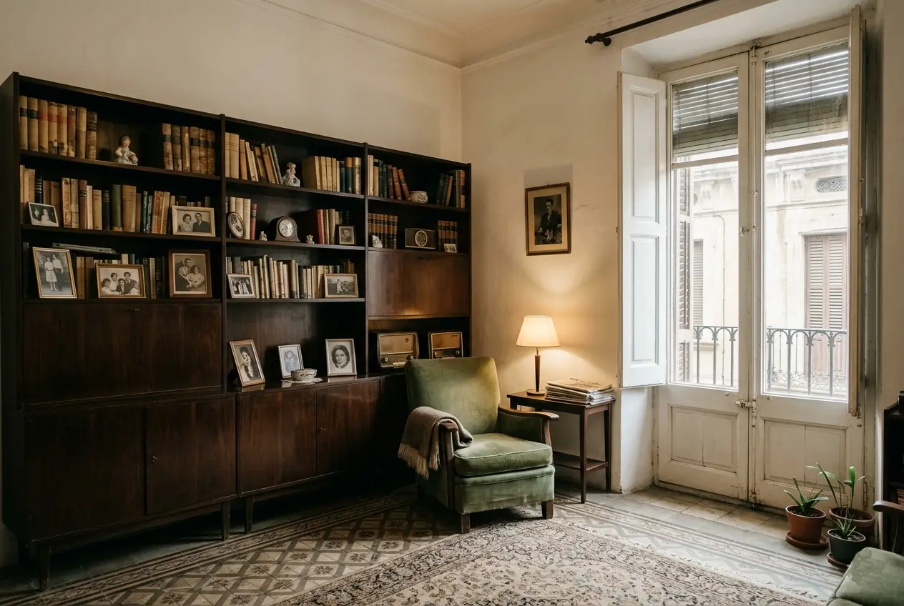
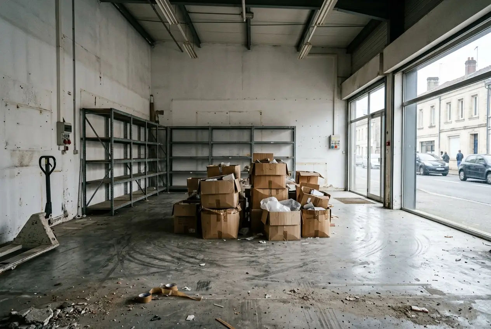
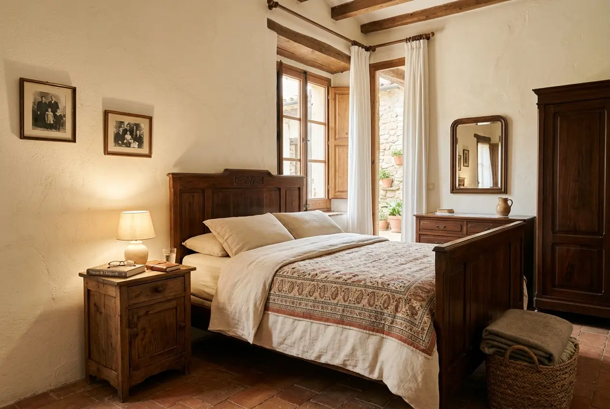

Sabadell · Vallès Occidental
Buidatge de pisos i desinfecció a Sabadell
Servei professional a Sabadell i tota la comarca del Vallès Occidental. Especialistes en habitatges, locals i naus industrials amb desinfecció certificada i gestió de residus documentada.
Especialistes a Sabadell
Coneixem els reptes únics de Sabadell i el Vallès
Sabadell combina un centre històric amb zones d'alta activitat comercial, àrees residencials consolidades i una extensa zona industrial. Cadascuna requereix una aproximació diferent: permisos específics, vehicles adaptats i protocols diferenciats.
A més, la comarca del Vallès Occidental té normatives específiques sobre gestió de residus industrials i domèstics. Proporcionem tota la documentació necessària per complir amb la normativa vigent sense que el client s'hagi de preocupar per cap tràmit.

Sabadell
Restriccions de trànsit
Zones de baixes emissions, horaris de càrrega i descàrrega i àrees de vianants. Coneixem les restriccions de Centre, Eix Macià i les zones industrials Nord. Gestionem tots els permisos necessaris.
Tipologia d'edificis
Des de cases baixes del centre històric fins a naus industrials modernes als polígons. Equips i vehicles adaptats a cada tipologia, amb protocols específics per a cada situació.
Desinfecció certificada
Productes autoritzats, equips especialitzats i documentació oficial del procés. Imprescindible en buidatges per defunció, síndrome de Diògenes o locals amb activitat sanitària o alimentària.
Tracte adaptat a cada zona
Població envellida en algunes zones, joves en altres, famílies a les àrees residencials noves. Sabem com treballar amb sensibilitat i respecte en cada context humà.
Serveis
Serveis especialitzats a Sabadell i el Vallès Occidental
Solucions adaptades a les necessitats de Sabadell: desinfecció certificada, gestió industrial i coneixement local de cada barri.
Buidatge per defunció a Sabadell
Gestió sensible amb desinfecció certificada en moments difícils. Coneixem els tràmits específics de Sabadell i treballem amb màxima discreció a tota la comarca. Documentació completa inclosa.
Llegir guia completaDesinfecció professional certificada
Serveis de desinfecció certificada per a habitatges, locals i naus a Sabadell. Eliminació de patògens amb productes autoritzats i lliurament de documentació oficial. Ideal per a bancs, notaries, comunitats i empreses.
Veure protocol de neteja DiògenesBuidatge de naus industrials
Especialistes en buidatge de naus industrials i locals comercials a Sabadell. Maquinària especial per a grans volums, autorització per a gestió de residus industrials no perillosos i documentació certificada.
Saber-ne mésGestió de residus certificada
Documentació completa de gestió de residus per a empreses i particulars a Sabadell. Certificat de gestió, factura detallada, certificat de desinfecció quan correspongui i documents per a tràmits legals.
Saber-ne mésBuidatge urgent 24h a Sabadell
Servei d'emergència disponible les 24 hores. Ideal per a desallotjaments urgents, lliuraments de claus o situacions imprevistes. Permisos, equip i logística gestionats en temps rècord, amb desinfecció si es requereix.
Saber-ne mésServei per a immobiliàries
Solucions professionals per a agències immobiliàries a Sabadell. Tarifes especials, rapidesa garantida, coordinació perfecta i documentació certificada perquè la propietat quedi a punt per a visites.
Saber-ne mésBarris de Sabadell
Coneixement local barri a barri
Centre · Eix Macià Zona comercial amb restriccions d'aparcament severes. Gestionem permisos especials i treballem en horaris adaptats per minimitzar molèsties. Vehicles compactes per a carrers estrets i coordinació amb el comerç local.
Can Rull · Gràcia Àrees residencials amb carrers estrets i edificis antics. Equips manuals per a accessos complicats. Respecte pels horaris de descans dels veïns i coordinació prèvia amb les comunitats.
Zona Industrial Nord Naus industrials i polígons amb normatives específiques. Maquinària pesada, protocols per a residus industrials i documentació completa per complir amb la normativa del Vallès Occidental.
Concòrdia · Creu de Barberà Zones mixtes residencial-industrial. Adaptem els serveis combinant sensibilitat residencial amb eficiència industrial. Flexibilitat horària i solucions a mida.
La Serra · Sant Oleguer Zones residencials modernes amb millors accessos però normatives comunitàries estrictes. Coordinació directa amb comunitats de veïns i compliment de tots els protocols establerts.
Ca n'Oriac · Torre-Romeu · Sant Julià Barris amb necessitats específiques. Treballem també a Can Feu, Can Puiggener i tots els racons de Sabadell. Cada zona té les seves particularitats i les coneixem.



Recursos útils per a residents i empreses de Sabadell
Reciclatge i residus
Tràmits municipals
Residus especials
Com treballem
Procés senzill, sense sorpreses
Cada barri de Sabadell té les seves particularitats. El nostre procés està dissenyat per adaptar-s'hi sense generar molèsties ni retards.
Contacte i valoració
Ens truca o emplena el formulari. En menys d'1 hora responem i acordem una visita o videotrucada per valorar el contingut, l'accés i els permisos necessaris.
Pressupost tancat amb documentació
Us lliurem un pressupost detallat i tancat que inclou gestió de permisos, certificat de residus i, si escau, certificat de desinfecció. Sense costos ocults.
Execució del buidatge
Treballem en els horaris permesos per l'ajuntament de Sabadell, respectant les restriccions de cada zona i comunicant prèviament als veïns afectats.
Gestió certificada i lliurament
Classifiquem i transportem els residus als gestors autoritzats. Us lliurem tota la documentació: certificat de gestió, de desinfecció i la propietat en l'estat acordat.
Preus orientatius
Sense lletra petita
Pressupost tancat i gratuït en menys de 24h. La documentació de gestió de residus està inclosa en tots els serveis.
Pis 50–60m² amb mobles buits
Pis 50–60m² amb mobles i estris
Casos d'acumulació severa, des de
* Preus orientatius. Pressupost exacte després de visita o videotrucada gratuïta.
Documentació inclosa
Tots els nostres serveis a Sabadell inclouen documentació oficial de gestió de residus. A més, per a naus industrials o casos que ho requereixin, proporcionem certificats de desinfecció vàlids per a bancs, notaries i administracions.
Clients satisfets
El que diuen els nostres clients a Sabadell i comarca
«Necessitàvem buidar i desinfectar completament un local comercial al Centre de Sabadell. L'equip va ser extremadament professional, van gestionar tots els permisos d'aparcament i la desinfecció va ser impecable.»
«Excel·lent servei per a una nau industrial a la Zona Nord de Sabadell. Van gestionar residus especials amb documentació certificada i el buidatge va ser ràpid i eficient. Els recomano per a qualsevol treball industrial.»
«Tracte excepcional en un buidatge per defunció a Can Rull. La desinfecció certificada ens va donar molta tranquil·litat i la gestió de residus va ser impecable. Professionals i sensibles, ideals per a situacions difícils.»
Preguntes freqüents
El que ens pregunten sobre buidatges a Sabadell
Resolem els dubtes més comuns sobre els nostres serveis a Sabadell i el Vallès Occidental.
En zones com Centre i Eix Macià gestionem permisos especials de càrrega i descàrrega amb l'ajuntament de Sabadell. Treballem en horaris específics per minimitzar molèsties i utilitzem vehicles compactes adaptats a les restriccions de cada zona.
Sí. Proporcionem serveis de desinfecció professional amb certificació per a habitatges, locals i naus a Sabadell. Utilitzem productes autoritzats i equips especialitzats, lliurant documentació oficial del procés vàlida per a bancs, notaries i administracions.
Sí. Comptem amb autorització per gestionar residus industrials no perillosos a Sabadell. Treballem amb gestors autoritzats i proporcionem tota la documentació necessària per complir amb la normativa vigent al Vallès Occidental.
El temps depèn del volum i tipus de residus. Per a naus estàndard (500-1000 m²) a Sabadell, normalment completem el buidatge en 2-3 dies. Incloem una avaluació prèvia gratuïta per proporcionar un termini exacte i un pressupost tancat.
Sí. Cobrim tota la comarca del Vallès Occidental des de Sabadell: Barberà del Vallès, Ripollet, Cerdanyola, Rubí, Sant Quirze del Vallès, Sentmenat, Polinyà i totes les localitats de l'entorn amb el mateix nivell de servei i documentació.
Proporcionem certificat de gestió de residus, factura detallada, certificat de desinfecció quan correspongui, i documentació per justificar davant de comunitats, bancs o notaries. Per a processos d'herència, oferim documentació específica adaptada a cada necessitat.
Contacte
Necessiteu buidar o desinfectar una propietat a Sabadell?
Us responem en menys d'1 hora. Pressupost tancat i documentació certificada inclosa.
Contacte directe Sabadell
Telèfon
688 30 41 43Horari
Dilluns–Divendres: 8:00–20:00
Dissabtes: 9:00–14:00
Urgències disponibles 24h
Zona de servei
Sabadell i tota la comarca del Vallès Occidental.
Sol·liciteu el vostre pressupost gratuït
Empleneu el formulari i us truquem en menys d'1 hora amb un pressupost orientatiu.
Necessiteu buidar un pis, local o nau industrial a Sabadell?
Comptem amb l'experiència i els equips especialitzats per als desafiaments únics de Sabadell i el Vallès Occidental. Pressupost tancat amb desinfecció certificada i gestió de residus documentada.
Sol·licitar pressupost ara